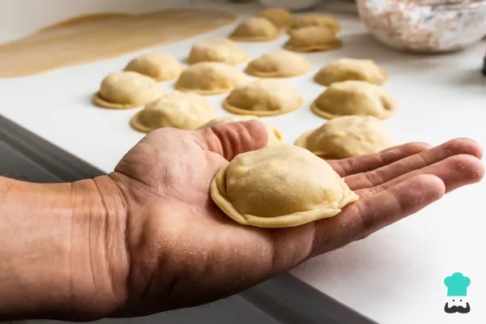
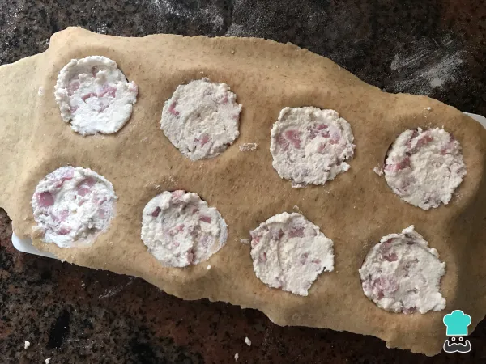

SORRENTINOS
Sorrentinos de Ricota y queso (porcion para 4 persons)
Ingredientes para la masa
- 500 gramos de harina 0000
- 1 cucharada postre de sal fina
- 300 mililitros de agua potable (cantidad necesaria)
- 2 huevos
- 1 puñado de harina
Para preparar la masa
- Para hacer la receta de masa para sorrentinos caseros primero reúne todos los ingredientes que vas a utilizar para elaborar la masa de sorrentinos.
- Luego, ponemos la harina en un bol y le hacemos un hoyo en el centro.
- Cascamos los huevos y los ponemos junto con la harina, incorporamos la sal y, de a poco, vamos poniendo agua poco a poco y mezclando. Los ml de agua indicados son orientativos, ya que hay que añadir la cantidad que precise la harina.
- Con la ayuda de una cuchara, continuamos mezclando e incorporando el agua hasta que tome la consistencia necesaria para luego amasar. La cantidad de agua debe ser la necesaria para conseguir una masa de sorrentinos homogénea, pero si te pasas y queda muy líquida, siempre puedes corregirla agregando más harina.
- Colocamos en la mesada un poco de harina, ponemos sobre ella nuestra masa para sorrentinos y amasamos hasta obtener un bollo que no se nos pegue en las manos.

Ingredientes para el relleno
- 200 gramos de jamón
- 250 gramos de ricota
- 1 diente de ajo
- pimentón ahumado y pimienta
- 30 gramos de nueces

Preparación del relleno
- Pica el jamón tan pequeño como puedas, si lo cortas muy grande, podría romper la masa. Mézclalo con la ricota, los condimentos, las nueces picadas y el ajo cocido.
- Para cocinarlo, puedes hervirlo en leche hasta que esté blando o en el microondas en un recipiente apto con un platillo debajo, ya que la leche hierve y puede desbordar.
- Comprueba que el relleno esté sabroso y corrígelo si es necesario. Ten en cuenta que el sabor se perderá un poco al comerlo con la masa, así que intenta que esté algo más fuerte que lo que estás acostumbrado.
